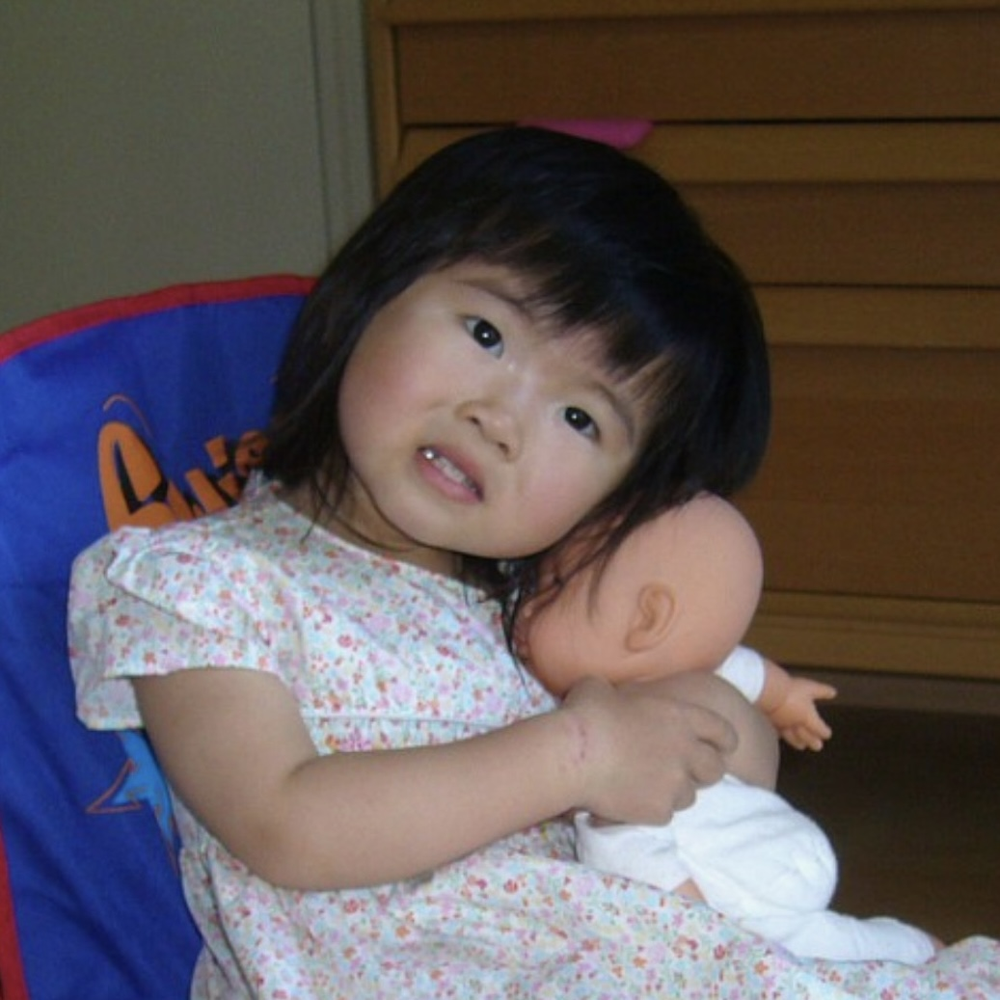

with a degree in psychological & brain sciences and a minor in media arts & design from ucsb, ella luk is an interdisciplinary artist driven by her desire for eternalizing the things that make her feel in any sort of medium. jack of all trades, master of some (or so she thinks), ella's art spans across multiple forms—ranging from ceramics and graphite to ui/ux design, video editing, and film photography. in her free time, she dances, reads heaps of fiction, journals like her life depends on it, and spends a lot of time on her skateboard.